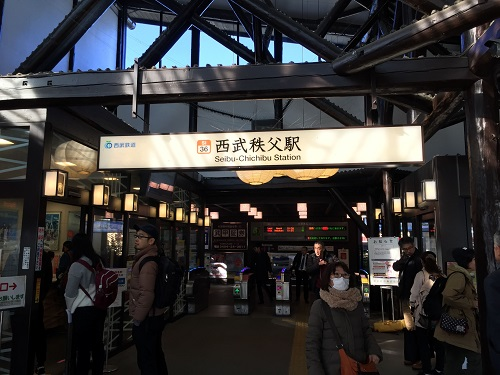
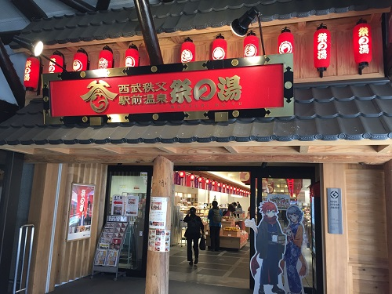
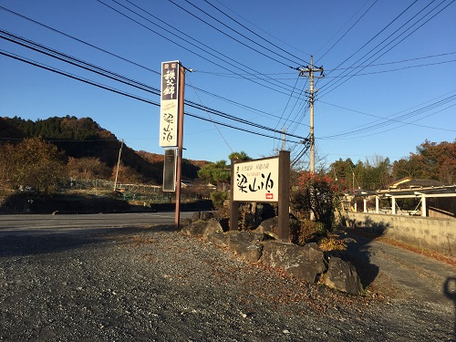
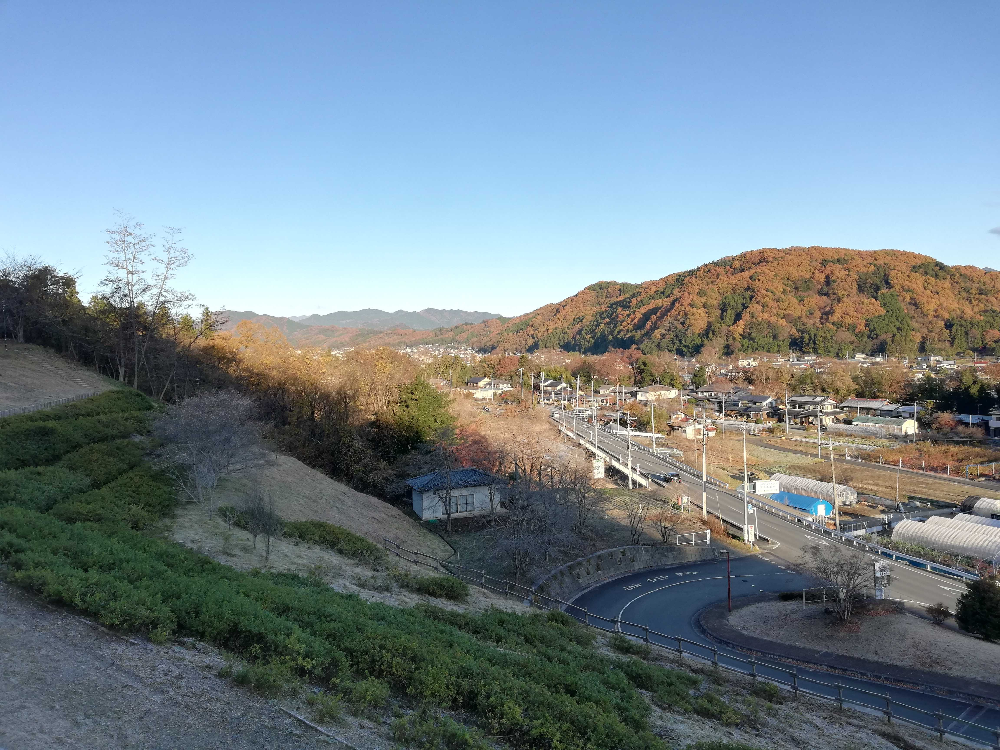
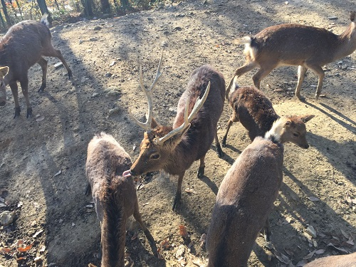
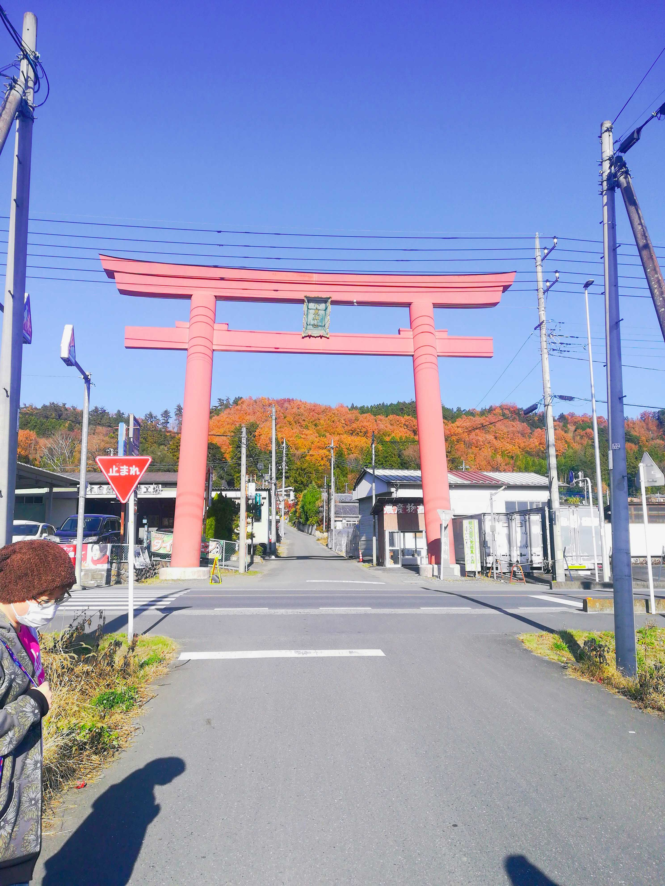

鉄は熱いうちに打て
=============================
PyLadies Tokyo 2019 合宿報告¶
2019-12-01
この記事は PyLadies Japan Advent Calendar 2019 - Adventar の１日目です。
PyLadies Tokyo 秋合宿 2019 - connpass への参加報告をします。
今年もPyLadies Tokyoの合宿に参加しました。もう３回目の参加と思うと感慨深いです。
今年は月末月初の開催だったためか少数精鋭の７人での合宿になりました。もくもく時間がたくさんとれたので実りある合宿となりました。
合宿風景です #pyladiestokyo pic.twitter.com/xkJxyy1pCU
— PyLadiesTokyo (@PyLadiesTokyo) November 30, 2019
場所は２年前と同じ秩父です。
秩父に到着。
まずは集合前にお風呂で身を清めました。
駅前にあって手軽な割にとても良いお風呂でした。露天の青空がとても素敵で、感動しました。
宿も２年前と同じ梁山泊さんにお世話になりました。
宿の近くの公園に上ると秩父が一望できて素敵でした。
もくもく会は宿所有のホールで行いました。たっぷり集中できました。
ホールの近くには鹿公園があって、鹿に餌やりで息抜きができました。
神社もよかったです。
奇跡的にお天気恵まれた3日間で、最高の合宿になりました。
この記事を書いている時点で2日目の夜ですが、進捗報告します。
feedの修正はあきらめて自分のブログにしか当てはまらない rss.xmlを雑に吐き出すスクリプトを書きました
LINE PAYを使えるようになりました
PyConJP 2019 参加ブログ
PyLadies Tokyo 5周年参加ブログ
Inside_Sphinxをダウンロードしてざっと読み
Advent Calendar を作成
3日目ももくもく時間があるので、MUSTを何とか進めます。
明日は、 なつこ さんです。